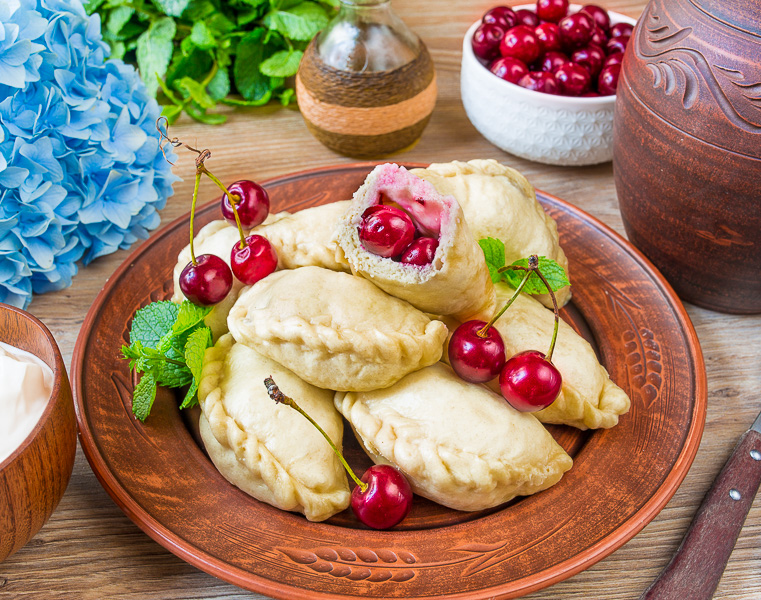

Основні страви

Вареники
Традиційні вареники з начинкою з картоплі, сиру або м’яса, подаються зі сметаною та смаженими цибулею.
Ціна: 120 zł
Голубці
Капустяні рулети, фаршировані рисом і м’ясом, тушковані в ароматному томатному соусі.
Ціна: 130 zł